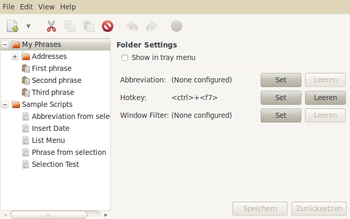
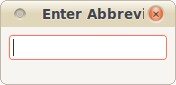
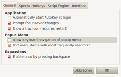

autokey
Dieser Artikel wurde für die folgenden Ubuntu-Versionen getestet:
Ubuntu 16.04 Xenial Xerus
Ubuntu 14.04 Trusty Tahr
Zum Verständnis dieses Artikels sind folgende Seiten hilfreich:
 AutoKey
AutoKey  ist quasi das Linux-Gegenstück zur quelloffenen Windows-Software AutoHotkey. Beiden Programmen liegt die Idee zugrunde, die Eingabe von sich wiederholenden Textbausteinen und die Ausführung beliebiger Aktionen per Tastenkürzel zu vereinfachen, um eintönige Arbeitsschritte zu automatisieren und hierdurch Fehler zu vermeiden. Wer innerhalb einer Textverarbeitung wie Microsoft Word oder Open- bzw. LibreOffice einmal mit der AutoText-Funktion gearbeitet hat, kann die Möglichkeiten des Programms schon gut einschätzen. Anders als bei einer rein anwendungsbezogenen Lösung können mit AutoKey jedoch Textbausteine und Aktionen einheitlich und systemweit, also z.B. für Textverarbeitung, E-Mail-Programm und Webbrowser gleichzeitig definiert werden.
ist quasi das Linux-Gegenstück zur quelloffenen Windows-Software AutoHotkey. Beiden Programmen liegt die Idee zugrunde, die Eingabe von sich wiederholenden Textbausteinen und die Ausführung beliebiger Aktionen per Tastenkürzel zu vereinfachen, um eintönige Arbeitsschritte zu automatisieren und hierdurch Fehler zu vermeiden. Wer innerhalb einer Textverarbeitung wie Microsoft Word oder Open- bzw. LibreOffice einmal mit der AutoText-Funktion gearbeitet hat, kann die Möglichkeiten des Programms schon gut einschätzen. Anders als bei einer rein anwendungsbezogenen Lösung können mit AutoKey jedoch Textbausteine und Aktionen einheitlich und systemweit, also z.B. für Textverarbeitung, E-Mail-Programm und Webbrowser gleichzeitig definiert werden.
Ein wesentlichen Unterschied zwischen AutoKey und Autohotkey ist die verwendete Skriptsprache: Autohotkey nutzt die eigene, sehr weit entwickelte Skriptsprache AHKScript. Durch die Integration von Python gehen die Skriptmöglichkeiten in Autokey deutlich über AHKScript hinaus. In dem inzwischen nicht mehr weiterentwickelten Autokey 0.90.4 wird als Skriptsprache noch Python 2, in autokey-py3 das aktuelle Python 3 verwendet.
Die Benutzeroberfläche ähnelt einer frühen Version der kommerziellen Windows-Software PhraseExpress  , die ebenfalls verspricht, die eigene Produktivität zu steigern.
, die ebenfalls verspricht, die eigene Produktivität zu steigern.
Einziger Wermutstropfen: die Konfiguration ist ausschließlich auf Englisch. Mit Hilfe dieses Artikels sollte der Einsatz dieses praktischen Werkzeugs auch ohne Englisch-Studium gelingen.
Installation¶
 Die letzte Version von AutoKey auf Basis von Python 2 ist im Mai 2012 erschienen. Diese Version kann direkt aus den offiziellen Paketquellen installiert [1] werden:
Die letzte Version von AutoKey auf Basis von Python 2 ist im Mai 2012 erschienen. Diese Version kann direkt aus den offiziellen Paketquellen installiert [1] werden:
| Desktop-Umgebung und benötigtes Paket | |
| GNOME, MATE, Xfce, LXDE | Unity (ab 13.04), KDE, LXQt |
Paketliste zum Kopieren: sudo apt-get install autokey-gtk
sudo aptitude install autokey-gtk
|
Paketliste zum Kopieren: sudo apt-get install autokey-qt
sudo aptitude install autokey-qt
|
 mit
mit
Autokey-py3¶
Die Portierung von Autokey auf Python 3 heißt autokey-py3 . Sie ist kein Bestandteil der offiziellen Paketquellen, muss im Quelltext herunterladen und dann installiert werden. Die Installationsanleitung ist dabei leider fehlerhaft, da die angeblich zu verwendenden Module nicht die Installationsvoraussetzung erfüllen. Mit folgenden Schritten ist eine Installation möglich (getestet unter 16.04)
sudo apt install python3-pip sudo python3.5 setup.py install
Eine bestehende Autokey-Installation mit Phrasen und Skripten kann ohne Probleme weiterverwendet werden. Da Python 3 originär Unicode verwendet, hat autokey-py3 für deutschsprachige Nutzer den entscheidenden Vorteil, dass es Umlaute von Hause aus unterstützt. Diese lassen sich auch in Skripten nutzen (z.B. keyboard.send_keys("Unprätentiöser Text mit Umlaut")), was früher dazu geführt hat, dass die Tastatureingabe hing und Autokey manuell beendet werden musste.
Bedienung¶
Anschließend kann das Programm bei Ubuntu-Varianten mit einem Anwendungsmenü über den Eintrag "Zubehör -> AutoKey" gestartet [2] werden.

Einstellungen¶
Nach dem Aufruf des Programms öffnet sich ein Fenster, in dem man das gewünschte Verhalten konfigurieren kann (siehe Abbildung rechts). Unter "My Phrases" sind bereits Einträge für Textbausteine wie etwa ein Adressblock enthalten, während "Sample Scripts" Funktionen wie das automatische Einfügen eines Datums zur Verfügung stellen. Die folgenden Beispiele sollen zeigen, wie einfach sich AutoKey nutzen lässt.
Beispiele¶
Beispiel 1: Adresse (als Textbaustein) einfügen
unter "My Phrases -> Addresses -> Home Address" die eigenen Adressdaten hinterlegen
das Textkürzel für den Textbaustein ist bereits eingetragen und lautet
adrSpeichern
Nun wird jede Eingabe von adr +
(Leertaste) automatisch durch die eigene Adresse ersetzt.
Hinweis:
Die Taste ⌫ ermöglicht weiterhin die Verwendung des Kürzels als Text, sprich macht die Ersetzung rückgängig.
Beispiel 2: Datum (per Skript) einfügen
unter "Sample Scripts -> Insert Date" befindet sich bereits eine entsprechende Funktion
nun definiert man als "Abbreviation" beispielsweise das Textkürzel
dateSpeichern
Ab jetzt wird jede Eingabe von date +
automatisch durch das aktuelle Datum ersetzt (z.B. Di 25. Okt 20:47:07 CEST 2011)
Hinweis:
Im Unterschied zu Beispiel 1 lässt sich die Ersetzung per Skript nicht mit ⌫ rückgängig machen.
Wenn die Ausgabe zu genau ist, bearbeitet man die Funktion "Insert Date" und ändert die Zeile:
output = system.exec_command("date")in
output = system.exec_command("date +%Y-%m-%d")
Nun erhält man nur das Datum (in der neuen Schreibweise). Mehr Informationen enthält die Manpage zum Befehl date.
Beispiel 3: Anmeldung bei ubuntuusers.de (oder einer anderen Internetseite) auf Knopfdruck. Dazu legt man sich folgenden Textbaustein an:
Benutzername<tab>Kennwort<enter>
wobei Benutzername und Kennwort entsprechend angepasst werden müssen (die anderen Bestandteile bitte exakt so übernehmen!). Dann noch ein Tastenkürzel einstellen und speichern. "Login" auf ubuntuusers.de anklicken, Tastenkürzel drücken – fertig.
Achtung!
Das Kennwort wird im Klartext in der Datei ~/.config/autokey/autokey.bin gespeichert. Daher sollte man die Rechte für diese Datei bzw. den Ordner ~/.config/autokey/ so setzen, dass niemand außer dem Besitzer selbst Zugriff darauf hat.
Weitere Möglichkeiten¶
Alle Einträge unter "My Phrases" und "Sample Scripts" können über die rechte Maustaste  bearbeitet werden. Dazu zählen z.B. das Umbenennen, das Zusammenfassen in Gruppen oder das Entfernen von Einträgen.
bearbeitet werden. Dazu zählen z.B. das Umbenennen, das Zusammenfassen in Gruppen oder das Entfernen von Einträgen.
Jeder Textbaustein (und jedes Skript) besitzt drei Kriterien:
"Abbreviation" - wörtlich die Abkürzung, also das Textkürzel für den Textbaustein oder das Skript
"Hotkey" - optionales Tastenkürzel
"Window Filter" - innerhalb welcher Programme aktiv? (Voreinstellung: alle)
Falls man mal ein Textkürzel vergessen hat: mit Strg + F7 lassen sich die eigenen Textbausteine auch ohne Kenntnis des Kürzels einfügen. Skripte werden hier nicht aufgeführt.
Zwei der enthaltenen Skripte machen das Leben mit AutoKey noch leichter:
"Phrase from selection" - legt einen neuen Textbaustein aus markiertem Text an.
"Abbreviation from selection" - legt einen neuen Textbaustein aus markiertem Text an und fragt anschließend das Textkürzel ab.
In beiden Fällen ist es sinnvoll, zuerst ein Tastenkürzel (Hotkey) für die Funktion zu vergeben und zu speichern, bevor man dann Text markiert und das Skript via Hotkey aufruft. Wer sich intensiver mit Skripten beschäftigen möchte, muss leider Python lernen. Was sich eher später als früher, aber definitiv auszahlt.
Panel-Symbol¶
Beim Schließen des Einstellungsfensters bleibt AutoKey im Hintergrund aktiv und kann über das Symbol im Benachrichtigungsfeld des Panels verwendet werden. Ein Linksklick  auf das Symbol öffnet ein kleines Fenster,
auf das Symbol öffnet ein kleines Fenster,

in dem man das Kürzel des Textbausteins eingeben kann. Ein Rechtsklick auf das Symbol öffnet ein Menü, in dem man mit
"Enable Expansions" - das Programm vorübergehend deaktiviert (oder wieder aktiviert)
"Configure" - das Einstellungsfenster öffnet (siehe oben)
"Remove Icon" - das Panel-Symbol ausblenden kann (siehe Abschnitt Unity weiter unten)
"Beenden" - das Programm endgültig schließt
Konfiguration¶
 Um AutoKey nach der Anmeldung automatisch zu starten, wählt man im Programmfenster "Edit -> Preferences" und aktiviert "Automatically start Autokey at login". Mit den weiteren Möglichkeiten kann sich je nach Geschmack beschäftigen. Dabei hilft die unten genannte englische Dokumentation weiter.
Alle Einstellungen werden im Ordner ~/.config/autokey/ gespeichert.
Problembehebung¶
Tastenkürzel¶
Leider gibt es generelles Problem speziell bei Tastenkürzeln (Hotkeys): der Desktop-Aufsatz Unity, die verschiedenen Desktop-Umgebungen wie die GNOME Shell oder KDE SC und viele Programme verwenden eigene Tastenkürzel. So kann es passieren, dass diese mit eigenen AutoKey-Tastenkürzeln kollidieren. So ist z.B. bei Kubuntu 14.04 der Fall aufgetreten, dass sich AutoKey gar nicht mehr nutzen ließ.
Prinzipiell müsste man also zuerst alle verwendeten Tastenkürzel kennen, bevor man eigene mit AutoKey anlegt. Ein möglicher Ausweg ist, Tastenkürzel mit einer Programmangabe ("Window Filter") zu kombinieren, um Problemen vorzubeugen.
Unity¶
Da ab Ubuntu 11.04 mit Unity das klassische Konzept der Panel-Symbole nicht mehr funktioniert, muss man AutoKey hier erst freischalten. Ab Ubuntu 13.04 ist dies nicht mehr möglich. Eine Lösung kann hier das Deinstallieren von autokey-gtk und das anschließende Installieren von autokey-qt sein.
Das Panel-Symbol ist nicht im Unity-Stil und stört daher ggf. manche Benutzer. Es lässt sich jedoch ausblenden: Rechtsklick auf das Symbol und dann "Ausblenden". Danach kann man jedoch das Einstellungs-Fenster nur noch über die dafür vorgesehene Tastenkombination aufrufen. Standard ist hier:
Super +
K
Vertauschte Zeichen¶
In einzelnen Programmen (etwa in Libreoffice) kann es beim Einfügen von Textbausteinen zu Vertauschungen von Zeichen kommen. Im obigen Beispiel der Datumseingabe wird dann etwa das Datum 19-11-2013 zu 20113--119 entstellt. Dieses Problem ist darauf zurückzuführen, dass das jeweilige Programm die Tastatureingaben von Autokey nicht schnell genug verarbeiten kann. Werden Pausen zwischen den einzeln gesendeten Zeichen eingefügt, funktioniert Autokey problemlos.
Bezogen auf das Beispiel schafft ein kurzes Skript Abhilfe: Hier werden die Datumsbestandteile wie Tag/Monat/Jahr zunächst zwischengespeichert und zwischen jedem Einfügevorgang wird eine kurze Pause eingelegt, welcher für den Benutzer nicht wahrnehmbar ist.
output_y = system.exec_command("date +%Y")
output_m = system.exec_command("date +%m")
output_d = system.exec_command("date +%d")
keyboard.send_keys(output_d + "-")
time.sleep(0.01)
keyboard.send_keys(output_m + "-")
time.sleep(0.01)
keyboard.send_keys(output_y)Hinweis: Da das Datum keine Umlaute enthält, funktioniert das Skript problemlos unter beiden Versionen von Autokey. Sollen in Skripten auch Umlaute verwendet werden, empfiehlt sich die Verwendung von Autokey-py3.
Alternative Texpander¶
Eine mögliche Alternative kann Texpander sein. Siehe Texpander – Text Expander For Linux .
Links¶
Projektseiten: Autokey
(Python 2) und Autokey-py3 (Python 3)Wie von Geisterhand - Textbausteine einfügen und Aktionen automatisieren mit Autokey
- Linux User, 08/2012Linux Utility for Text Substitution, Hotkeys and Desktop Automation
- Blogbeitrag 04/2010, viele Beispiele
- Erstellt mit Inyoka
-
 2004 – 2017 ubuntuusers.de • Einige Rechte vorbehalten
2004 – 2017 ubuntuusers.de • Einige Rechte vorbehalten
Lizenz • Kontakt • Datenschutz • Impressum • Serverstatus -
Serverhousing gespendet von